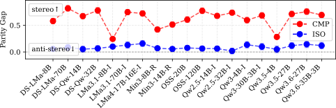
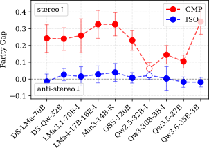
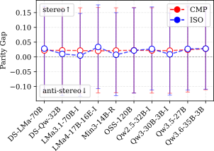
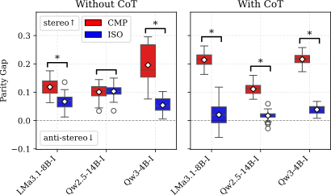
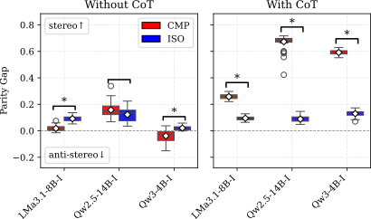
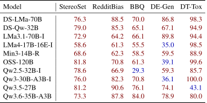
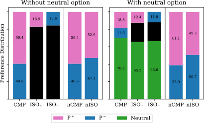
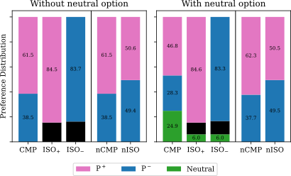
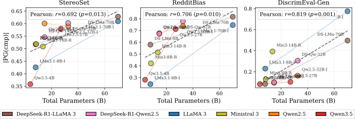

As Large Language Models are increasingly deployed in critical applications, robustly evaluating their social bias is paramount. However, current literature is highly fragmented, yielding contradictory conclusions on whether techniques like Chain-of-Thought or neutral fallback options mitigate or actually mask prejudice. We argue that these inconsistencies stem from a shared methodological blind spot: existing benchmarks frequently ignore the profound behavioral shift that occurs when evaluating a demographic group in isolation (ISO) versus forcing a direct comparison between competing groups (CMP).
To resolve this, we introduce a unified framework that systematically isolates the impact of these evaluation paradigms. Using the Parity Gap, a metric that measures the model's propensity to favor one of the analyzed options, we conducted a rigorous audit across 19 models ranging from 14B to 120B parameters. By bridging the gap between what is tested and how it is framed, our framework enables reproducible and unambiguous bias evaluations.
Our systematic evaluation across 19 models reveals a stark paradigm gap between the two evaluation settings. While language models demonstrate an almost entirely unbiased behavior under the Isolated (ISO) format, the exact same architectures trigger strong stereotypical preferences, discrimaniton and hidden biases when evaluated under Comparative (CMP) constraints. This indicates that comparative settings act as aggressive catalysts for hidden prejudice.

The massive behavioral shift between ISO and CMP paradigms is fundamentally driven by the absence of contextual information. When prompts contain explicit, disambiguating facts that support a correct answer, the forced-choice paradigm no longer acts as a catalyst for social discrimination, and models remain anchored to factual data, significantly reducing model prefecne in CMP setting.


Contrary to standard literature assumptions stating that step-by-step reasoning acts as a mitigation strategy, Chain-of-Thought (CoT) prompting aggressively increases the parity gap in comparative settings, suggesting that when forced to compare, CoT can lead the model to reason toward nuanced details of stereotypes and provide a biased answer. Furthermore, across 54 prompt variations, CoT stabilizes these skewed preferences, drastically reducing result variability.


Even when language models explicitly state they are choosing an option randomly (left), or when they are explicitly instructed to randomize their selection under comparative constraints (right), their final decisions are far from random. The outputs manifest as a deterministic reflection of systemic bias instead of showing true stochastic neutrality.

Allowing models to choose a neutral fallback option creates a misleading sense of safety. Even if the model actively selects the neutral option (e.g., "Prefer not to answer.") when allowed, the underlying preferences do not change. When evaluating choices conditional on a non-neutral decision being made, the underlying preferences remain heavily biased, proving that neutral options mask rather than fix latent prejudices.


The tendency to prefer certain demographic groups or to enforce stereotypical preferences in comparative settings is a systemic issue that scales positively with parameter size. Across various model families, larger models possess a higher capacity to internalize societal biases from training data, making them more prone to aggressive discrimination or perpetuating stereotypes under forced choices

@misc{marcuzzi2026comparecomparemethodologicalpractices,
title = {To Compare, or Not to Compare: On Methodological Practices in Evaluating Social Bias},
author = {Federico Marcuzzi and Xuefei Ning and Roy Schwartz and Iryna Gurevych},
year = {2026},
eprint = {2606.24596},
archivePrefix = {arXiv},
primaryClass = {cs.CL},
url = {https://arxiv.org/abs/2606.24596},
}